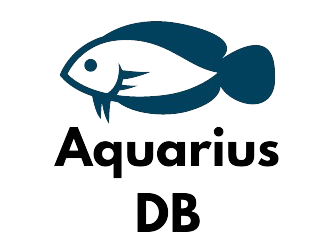
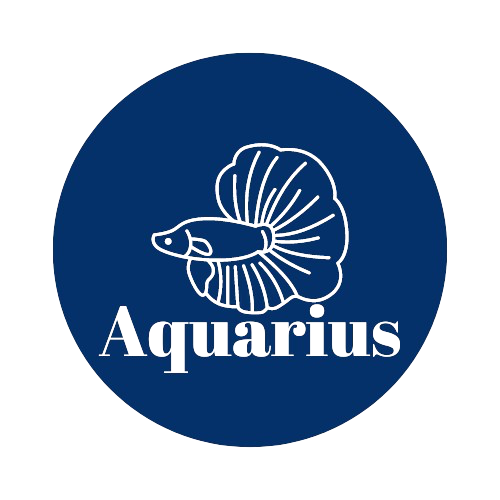
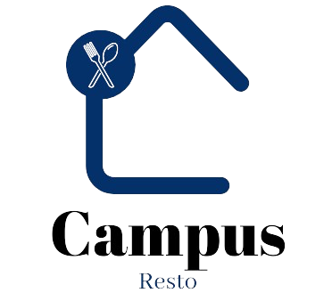

Dans le cadre de mon parcours professionnel, j'ai eu l'opportunité de concevoir une application mobile avec Ionic et React, prenant comme point de départ un projet antérieur baptisé Aquarius. Cette application marie habilement la rapidité de développement d'Ionic avec la flexibilité et la puissance de React pour offrir une expérience utilisateur fluide et intuitive. En m'inspirant des besoins identifiés dans le projet Aquarius, j'ai cherché à résoudre des problématiques spécifiques et à optimiser les processus opérationnels. Grâce à une fusion de compétences en développement mobile et une compréhension approfondie des exigences du projet Aquarius, j'ai réussi à créer une solution robuste et adaptable, prête à relever les défis à venir avec agilité. Ce projet témoigne de mon engagement à innover dans le domaine du développement d'applications mobiles, tout en restant fidèle aux valeurs et objectifs fondamentaux du projet Aquarius.
Dans le cadre de mon parcours professionnel, j'ai eu l'opportunité de concevoir une application mobile avec Ionic et React, prenant comme point de départ un projet antérieur baptisé Aquarius. Cette application marie habilement la rapidité de développement d'Ionic avec la flexibilité et la puissance de React pour offrir une expérience utilisateur fluide et intuitive. En m'inspirant des besoins identifiés dans le projet Aquarius, j'ai cherché à résoudre des problématiques spécifiques et à optimiser les processus opérationnels. Grâce à une fusion de compétences en développement mobile et une compréhension approfondie des exigences du projet Aquarius, j'ai réussi à créer une solution robuste et adaptable, prête à relever les défis à venir avec agilité. Ce projet témoigne de mon engagement à innover dans le domaine du développement d'applications mobiles, tout en restant fidèle aux valeurs et objectifs fondamentaux du projet Aquarius.
Le projet en PHP aborde la réservation des repas pour les élèves et les fonctionnalités administratives pour la gérante de la cafétéria. Il permet la création de menus, la modification des prix et la gestion des réservations. L'objectif est de développer une plateforme répondant à ces exigences de manière efficace et sécurisée.
